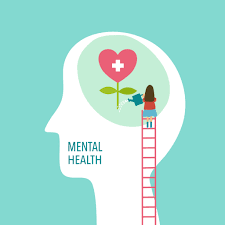

"Mental health awareness is the recognition that our psychological well-being is an important part of our own health, productivity, and happiness, as well as the well-being of our communities."
Our Mission Statement:
At MindAwakeBelize, our goal statement is to assist people who are dealing with mental health issues.
What is Mental Health?
Our emotional, psychological, and social well-being are all part of our mental health. It has an impact on the way we think, feel, and act. It also influences how we deal with stress, interact with people, and make decisions. Mental health is important at all stages of life, including childhood, adolescence, and adulthood.
Warnings Symptoms to Look Out For:
Positive mental health is critical because it helps people to reach their full potential, manage with life's stressors, work successfully, and contribute meaningfully to their communities.
There are several techniques to keep your mental health in good shape. REMEMBER HOW IMPORTANT YOUR MENTAL HEALTH IS! Getting professional treatment if needed, connecting with others, being optimistic, staying physically active, and helping others are all important strategies to keep your mental health in check.
Message